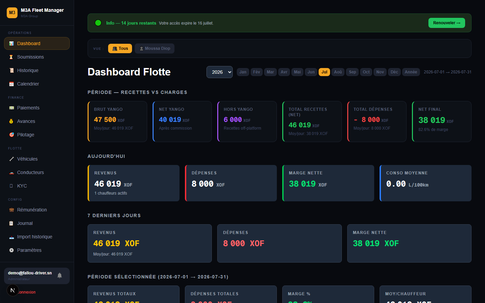
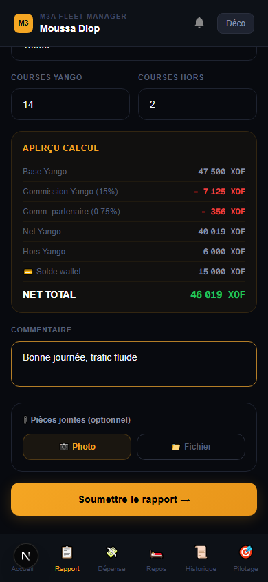
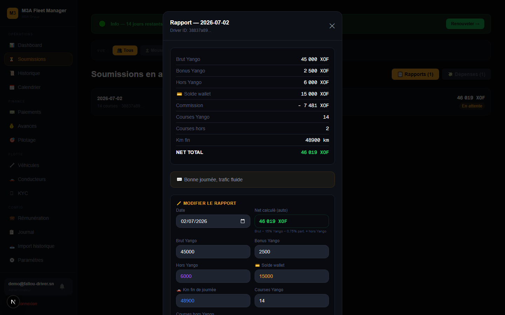
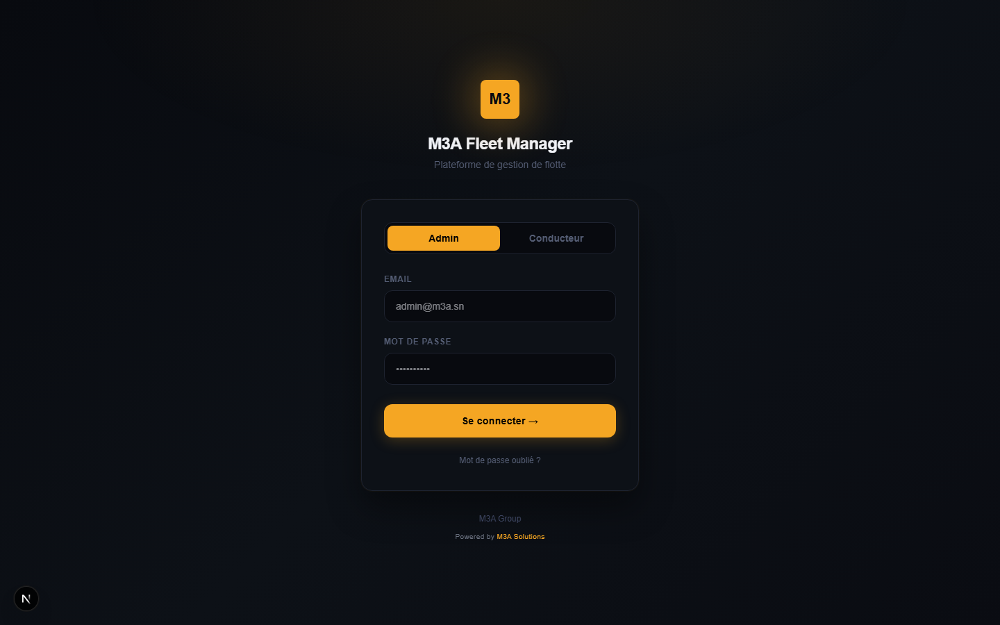

La plateforme de gestion pour flottes VTC et taxis avec chauffeurs (Yango, Heetch, indépendants) : recettes, commissions, salaires et rentabilité — en temps réel, depuis n'importe quel téléphone.

Qu'il gère 3 ou 100 véhicules, un propriétaire de flotte pilote encore son activité avec des cahiers, des groupes WhatsApp et des fichiers Excel. Résultat :
Chaque soir, chaque chauffeur déclare sa journée depuis son téléphone. Le gestionnaire valide en un clic, les commissions et salaires se calculent tout seuls, et le tableau de bord affiche la marge réelle de la flotte — jour après jour, véhicule par véhicule, chauffeur par chauffeur. Rien à installer : tout fonctionne dans le navigateur, sur mobile comme sur ordinateur.
Chaque recette Yango et hors-Yango est déclarée, horodatée et validée. Les écarts se voient immédiatement.
Le calcul des commissions est le même pour tous, visible par le chauffeur au moment de sa déclaration. Transparence totale.
Rentabilité par chauffeur et par véhicule, projections et simulations : vous savez où investir et où couper.
Plus de saisie Excel, plus de rapprochements manuels. La comptabilité de la flotte se fait toute seule.
Permis, assurances, reçus de carburant, justificatifs de paiement : stockés et retrouvables en 2 clics.
Notifications instantanées : rapport soumis, dépense à valider, avance demandée, document à renouveler.
Depuis son téléphone, en fin de journée : recettes Yango et hors-Yango, kilométrage, nombre de courses, dépenses de carburant avec photo du reçu. Le calcul de sa part s'affiche instantanément — il sait ce qu'il va toucher avant même de soumettre. Moins d'une minute, aussi simple qu'un message WhatsApp.
Interface pensée pour tous les profils de chauffeurs : simple identifiant + mot de passe, gros boutons, tout en français.


Notification à chaque soumission. Le gestionnaire ouvre le rapport : commissions et retenues déjà calculées selon les règles de sa flotte (taux Yango, part partenaire, paliers de salaire…). Il approuve ou rejette — et le tableau de bord se met à jour immédiatement.
Avances sur salaire, paiements chauffeurs, suivi des véhicules et de l'entretien suivent le même principe : demande → validation → traçabilité.
| Profil | Ce que la plateforme lui apporte |
|---|---|
| Propriétaires de flottes (2 à 200+ véhicules) | Contrôle des recettes, salaires automatisés, rentabilité de bout en bout |
| Gestionnaires délégués | Reporting transparent vers le propriétaire, validation des déclarations en mobilité |
| Chauffeurs | Déclaration simple, visibilité sur leur salaire et leurs avances — plus de contestation |
| Partenaires & revendeurs | La plateforme en marque blanche : votre logo, vos couleurs, votre nom de domaine |
M3A Fleet est multi-entreprises et personnalisable en marque blanche : chaque client dispose de son espace totalement cloisonné, à ses couleurs et avec son logo. Idéal pour un opérateur qui veut proposer la solution à son propre réseau de flottes — ses clients ne voient que sa marque.
Développé à Dakar, éprouvé sur des flottes Yango réelles : montants en FCFA, réalités du terrain (recettes hors plateforme, avances, solde wallet), sur n'importe quel smartphone.

Démonstration en ligne sur un compte réel : le parcours complet, du rapport du chauffeur au tableau de bord. Sur rendez-vous, à distance ou à Dakar.